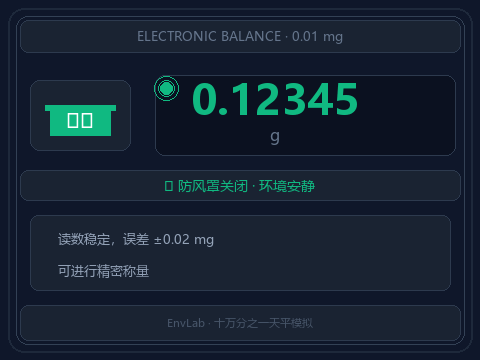

打开防风罩 + 拍一下桌子
读数能跳 15mg——相当于一片羽毛的 1/70
在环境监测实验室里，有一台仪器让所有新手都"不敢碰"——那就是十万分之一天平。
不是因为操作复杂，而是因为它太敏感了。你呼一口气，读数跳一下；隔壁关门，读数再跳一下。很多新人第一次用，盯着跳动的数字看了五分钟都不敢记录。
这不是矫情。十万分之一天平能分辨 0.01 毫克——相当于一片标准滤纸重量的 1/1000。在这种精度下，空气流动、体温辐射、桌面振动，都是"干扰信号"。
天平的分级由可读性（最小显示分度值 d）决定：
| 级别 | 可读性 | 典型用途 |
|---|---|---|
| 千分之一 | 1 mg (0.001 g) | 一般试剂称量 |
| 万分之一 | 0.1 mg (0.0001 g) | 分析天平，常规定量 |
| 十万分之一 | 0.01 mg (0.00001 g) | 精密分析，环境监测 |
| 百万分之一 | 0.001 mg (0.000001 g) | 微量分析，科研专用 |
在环境检测领域，HJ 标准中很多项目的称量要求使用十万分之一天平——比如滤膜称重法测 PM2.5、土壤重金属分析前的样品称量。
十万分之一天平自带玻璃防风罩，关上时柜内气流稳定，读数平静如水。打开罩门——空气对流瞬间涌入，读数立刻开始 ±0.5 mg 的随机跳动。
误差来源 1不是拍天平，是拍天平所在的实验台。用力适度（模拟隔壁台面有人放器材），天平读数瞬间跳动 5~15 mg——足够让一次称量作废。
误差来源 2对准天平侧面轻轻吹一口气（模拟人员走动带起的气流），读数跳 2~5 mg。这就是为什么使用十万分之一天平的实验室，不能开空调直吹、不能有人来回走动。
误差来源 3| 操作 | 读数波动 | 相对误差（称量0.5g样品） |
|---|---|---|
| 防风罩关闭·安静环境 | ±0.02 mg | < 0.004% ✅ |
| 打开防风罩 | ±0.5 mg | 0.1% ⚠️ |
| 旁边吹一口气 | ±2~5 mg | 0.4~1.0% ⚠️⚠️ |
| 拍桌子 | ±5~15 mg | 1~3% ❌ |
| 剧烈振动（关门/仪器运行） | ±15 mg+ | >3% ❌❌ |
HJ 标准对精密称量的要求通常是 ±0.1%。换句话说——拍一下桌子造成的误差，是标准允许上限的 10~30 倍。
下面这段动画展示了一个完整流程：防风罩关闭（稳定）→ 打开防风罩（波动）→ 拍桌子振动（剧烈跳动）→ 恢复稳定。
全程约 8 秒，看看十万分之一的精度有多"敏感"。

动图 · 26帧循环播放 | 防风罩关闭→打开→振动→恢复
天平内部的电磁线圈需要达到热平衡。开机直接用的误差可达 ±0.1 mg。
稳定后显示的数字才是有效数据。很多新手打开罩门放样品，关上就马上读数——这时柜内气流还没稳定。
十万分之一天平必须放在大理石材质的防震台面上，不能和通风橱、离心机共用台面。
使用标准砝码进行三点校准（出厂配带 50g/100g/200g 标准砝码），偏离超过 ±0.2 mg 需调整。
关注公众号，回复关键词获取交互模拟器链接
还可以免费领取 54 项环境咨询业务完整索引
下一篇预告：GC 气相色谱图怎么看？
调一调温度和流速，秒懂分离度原理